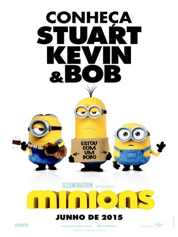

Assistir
IMDB
Minios
2015
Desde a origem dos tempos, os Minions serviram (e acidentalmente eliminaram) os mais detestáveis vilões da história. Depois que seu último e explosivo erro os deixou sem um malvado líder, os Minions entram em profunda depressão. Com o bando à beira de um colapso, três improváveis heróis – Kevin, Stuart e Bob – saem em uma busca de um novo chefão. Quando sua missão os leva à sua próxima mestra em potencial, Scarlet Overkill (Sandra Bullock,na versão em inglês, vencedora* do Oscar®), nossos três heróis têm que enfrentar o maior de todos os desafios: salvar toda a espécie dos Minions… de ser exterminada!